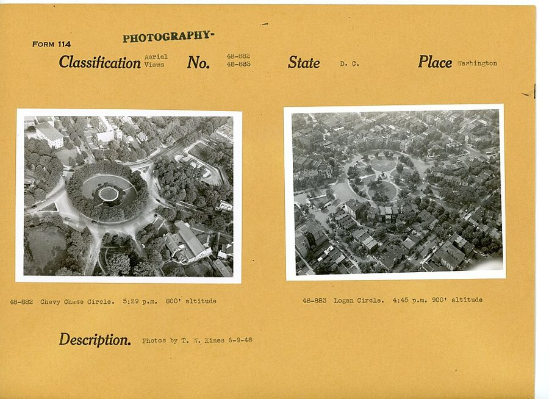
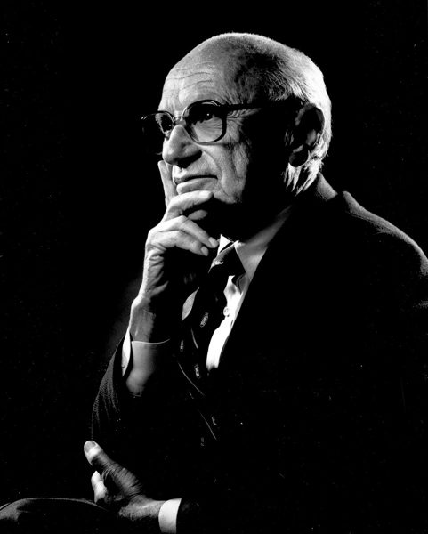
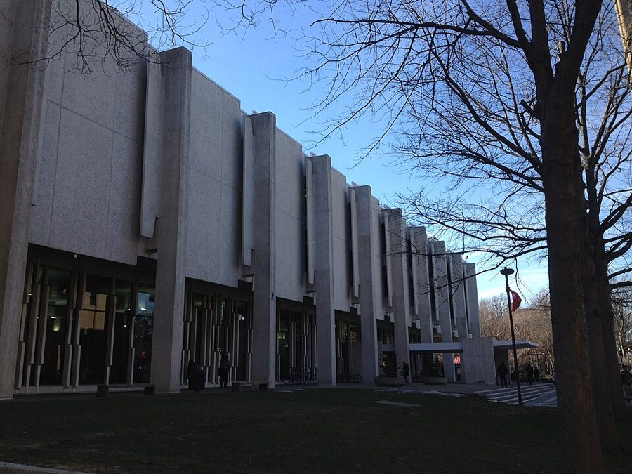

这一页在做什么
1971 到 1973 年：他离开洛杉矶，去华盛顿的智库 Urban Institute 写完博士论文，家安在白人富人区 Chevy Chase，然后回费城进 Temple 大学教书。中间一节专讲他和 Sowell 怎么认识、怎么又成了同事。读的时候抓两条线：别人凭肤色猜他是谁，他怎么看这种猜测；找教职时，他怎么提防自己被当成「照顾名额」。

1948 年 6 月联邦公路局拍的航拍档案。左边是 Chevy Chase Circle，正好跨在华盛顿特区和马里兰州的交界上，往北就是作者 1971 年安家的 Chevy Chase；右边是华盛顿市区的 Logan Circle。照片比书里的事早二十多年。T. W. Kines，公有领域，维基共享资源 读之前：这一页在他一生的哪里
上一页停在 1969 年：他考过了博士资格考，在 Cal State 当上全职助理教授，论文还没动笔。这一页从 1970 年的一封邀请写起，写到 1973 年 9 月进 Temple。这几年是尼克松执政，越战还没打完；六十年代末的校园抗议刚过去，联邦政府开始要求拿政府合同的大学订出招聘少数族裔和女性的目标。「是不是因为我是黑人才请我」，成了黑人学者绕不开的问题。
读的时候带着这几个问题。不用先找答案，读完回来对照「检查一下理解」。
白人邻居请他去院子里干活，他不觉得受了侮辱。他的理由是什么？他又给这种猜测划了哪条线？§1
他说 UCLA 的系主任请 Sowell 时，不知道 Sowell 是黑人。这个故事能证明什么，不能证明什么？§2
Temple、UMass、Cincinnati 三次面试，他各自在提防什么？§3
分节地图
这一页是原书第 5 章的前三节（章首没有小标题，本站记作 §1）。粗体是这一节的地标；斜体是英文这一节开头的几个词，在 Kindle 里搜它就能跳到那里，错字照电子书原样。读完打个勾。
Urban Institute 和 Chevy Chase 的家约 1300 词 IN 1970, PROFESSOR GEORGE BORTS … 第 8–13 段两件事让他在所里不讨喜；第 14 段起是两回被人凭肤色猜身份。 Sowell 进 UCLA，又进 Urban Institute约 900 词 About six months after my arrival … 第 19–23 段是他转述的故事，留意哪些他在场，哪些是听来的。 Temple、UMass、Cincinnati 三场面试约 1200 词 In early 1973, Temple University's … 第 33–35 段讲奴隶制的那番话最容易被断章取义，整段读完。
出场的人
按出场顺序。书里的家人和同事只写书里说的；公众人物写生卒年。
James Buchanan 1919–2013，经济学家，公众人物 1986 年诺贝尔经济学奖得主，公共选择理论的开创者之一。第 2 段：作者在 UCLA 上过他的课，他还出题并批改了作者博士笔试的公共财政部分；是他把作者推荐给 Urban Institute。
Harold Hochman 经济学家，Urban Institute 公共财政组的负责人 第 2 段：在底特律年会上面试作者，还去听了他的评论。作者在他的组里一边做研究一边写论文；第 8 段说组里的人政治上多是中间派。
Connie 作者的妻子 第 3 段起：两人带着猫开车横穿美国，搬进马里兰的新家。第 16 段在公共汽车站被一位黑人女佣让上车，又被请下车。第 30 段拿 Temple 的位置开他的玩笑。
Armen Alchian 1914–2013，UCLA 经济学家，公众人物 上一章作者在 UCLA 的老师。第 6 段：听说作者要去 Urban Institute，说他有点天真，去华盛顿看看决策究竟是怎么做出来的，对他有好处。
Bill Gorham William Gorham，1930–2021，Urban Institute 首任所长 第 11 段：几个月后私下告诉作者，有些同事不喜欢他。
Reginald Brown Urban Institute 的副所长，黑人 第 18 段：作者提名 Sowell 主持少数族裔研究项目，他大力支持。
Thomas Sowell 1930 年生，经济学家，公众人物 第 18 段作者在所里提名他。第 19–27 段是两人的交往：1969 年夏在 UCLA 第一次见面，后来两家一起吃饭，Sowell 请他看拳赛，在 Urban Institute 午饭时下棋。
Milton Friedman 1912–2006，芝加哥大学经济学家，公众人物 弗里德曼，1976 年诺贝尔奖得主。第 20 段作者点名的芝加哥学派代表；第 22 段 Allen 问他有没有黑人学生可推荐，他反问：你不是已经请了我的学生 Sowell 吗？
William Allen 1924–2021，UCLA 经济系主任（1967–1969），公众人物 第 21–23 段：说话尖刻，不理会激进学生的要求，办公室外被人放过一颗小炸弹。作者说，他是读了 Sowell 的研究、没见过面就请的人。
Louis Harms Temple 大学经济系主任 第 28–29 段：请作者来讲论文、谈教职。作者当面问他有没有聘黑人的压力，他说没有，但承认作者是黑人对系里是个免不了的加分。
Simon Rottenberg 经济学家，研究职业执照和劳动问题 第 31–32 段：UMass 的教授，作者说 UMass 吸引他，是因为他在那里。1962 年写过《职业执照的经济学》。作者说他绝不是左派口中的「数理经济学家」。
Alfred Kuhn 1914–1981，经济学家 第 38 段：Cincinnati 大学的教授，作者本科时读他的 The Study of Society 受过影响，说能和他共事会很高兴。
背景：作者默认你知道的事
按在书里出现的顺序排，标题前是节号。这里只讲事情本身，作者怎么看放在后面几节。
§1 Urban Institute：华盛顿的智库1967 年底约翰逊总统召集一批人筹办一个研究城市问题的机构，1968 年 4 月注册成立，是民间的非营利组织，设在华盛顿，研究住房、福利、财政这些国内政策。首任所长 William Gorham 当过卫生教育福利部的助理部长，一直干到 2000 年。这类机构今天叫智库（think tank）：不教书，专做研究，写报告给政府和国会看。第 6 段 Alchian 说去华盛顿能看到「决策究竟是怎么做出来的」，说的就是这种离政府很近的位置。
§1 Chevy Chase：边界那边的富人区马里兰州紧挨华盛顿西北角的一片住宅区，由后来当上参议员的 Francis Newlands 创办的 Chevy Chase Land Company 开发，从一开始就面向有钱人。二十世纪上半叶，这一带不少房契里写着不许卖给黑人和犹太人。1948 年最高法院判这类条款不能靠法院强制执行，1968 年的《公平住房法》禁止住房上的种族歧视，但到七十年代初，住在这里的黑人仍然很少（第 12、14 段）。第 16 段的 Chevy Chase Circle 是区界上的环岛，过了它就进华盛顿市区。
§1 1971 年的全国日托之争第 8 段那份日托研究，书里没说是为哪项政策做的。当时的大背景是：1971 年国会两院通过《全面儿童发展法》（Comprehensive Child Development Act），由联邦出钱、地方开办，在全国设日托中心，按家庭收入收费。尼克松 1971 年 12 月 9 日否决了它，说这会让国家走向集体育儿，而不是以家庭为中心。作者说的「1787 年」是美国宪法起草的那一年。
§1 Swift 的《一个温和的建议》
Jonathan Swift，Charles Jervas 1718 年画。Charles Jervas，公有领域，维基共享资源
爱尔兰作家 Jonathan Swift（《格列佛游记》的作者）1729 年发表的讽刺文。文章用一本正经的口气算账，建议把穷人家一岁大的孩子养胖了卖给富人当菜吃，一举解决饥荒和穷人负担。它挖苦的是把穷人当数字处理的政策家。书里说是「孤儿」，Swift 原文说的是穷人家的孩子。作者把它复印了附在评审意见后面（第 9–10 段），意思是：你们这份研究和它一样荒唐。不知道这是反讽，就会把这两段读反。
§2 校园里的黑人研究项目1968–69 年，各地大学的黑人学生要求开设黑人研究（black studies）、多聘黑人教授，抗议一波接一波。UCLA 1969 年初新设非裔美国人研究中心，两个黑人组织为中心主任的人选起了争执，1 月 17 日在校园 Campbell Hall 的一次学生会议上，两名黑豹党成员学生被枪杀。第 18 段作者说要避开「校园黑人研究项目出过的那类问题」，第 19 段说 UCLA 学生的抗议，背景都是这一段。
§2 芝加哥学派和它的「农场队」
Milton Friedman 晚年的肖像。照片来自一家推广择校和教育券的基金会，它以 Friedman 夫妇命名，今天改名 EdChoice。The Friedman Foundation for Educational Choice，CC0，维基共享资源 芝加哥大学经济系从五十年代起以主张自由市场出名，Friedman（1976 年）、Stigler（1982 年）、Becker（1992 年）先后得诺贝尔奖，人称芝加哥学派。farm team 是棒球说法：大联盟球队下面培养新人的小联盟球队。作者说 UCLA 和弗吉尼亚大学是芝加哥的「农场队」，是说这两个系的路数和芝加哥接近。Buchanan 1968 年来 UCLA 教一年之前，就在弗吉尼亚大学。第 20 段作者特意说，这些人与其说「保守」，不如说「同情自由市场」。
§2 阿里对弗雷泽1971 年 3 月 8 日，拳王阿里（Muhammad Ali）和弗雷泽（Joe Frazier）在纽约麦迪逊广场花园争重量级冠军，号称「世纪之战」。阿里因拒服兵役被禁赛三年多，这是他复出后头一回争世界冠军。比赛不在电视上免费播，全美各地的剧院、体育馆用闭路电视卖票转播，这就是第 24 段的「大银幕影院」。弗雷泽 15 回合点数获胜，阿里职业生涯第一次输。
§3 Temple 大学和 Main Line
Temple 大学主校区的 Paley 图书馆，2015 年摄。主校区在北费城的 Broad 街。Dorevabelfiore，CC BY-SA 4.0，维基共享资源 Temple 大学的主校区在北费城，书里说在 Broad 街和 Montgomery 街路口，离他长大的 Richard Allen 公共住房只隔十个街区（第 30 段）。Main Line 指费城西边沿着当年宾夕法尼亚铁路干线的一串郊区小镇，是老牌富人住的地方，Devon 是其中一站。他家住 Main Line、人在北费城上班，Connie 的玩笑就是从这个反差来的。
先用中文过一遍：这一页的经济学
作者讲到经济学的地方，这里先从书外把道理讲一遍：它是什么、经济学一般怎么分析。它在这一页起什么作用，看每块最后一句。讲过的概念都汇总在经济学概念 。作者有明确立场的地方，最后各有一块「主流看法 / 作者的看法 / 本站的评论」。
他的博士论文题为 The Low-Income Market Place（第 2 段）；第 26 段提到的 Why the Poor Pay More（穷人为什么买得更贵）是 1973 年发表的一篇文章，讲的就是论文的题目。书里没讲论文的内容。穷人街区东西贵的一种解释，见 01a 的成本转嫁 。
作者爱问的一句：没有这个项目之前，美国人怎么过的
遇到主张新设政府项目的人，他最爱问两个问题：这个项目出现之前美国人怎么办？为什么现在需要它？§1 第 8 段
拿日托来说：从 1787 年到 1972 年，没有政府办或政府补贴的日托，这个国家照样活下来、富起来了。§1 第 8 段
他承认已经记不清那份研究具体荒唐在哪；他的回应是附上 Swift 的讽刺文，退还给作者。§1 第 8–9 段
§1 教育券和学校竞争 educational vouchers 政府不再把钱直接拨给学区里的公立学校，而是把一个孩子一年的教育经费以「券」的形式交给家长，家长拿它去任何一所合格的学校交学费，包括私立学校。主张者说：学校得靠吸引学生拿钱，就得和别的学校竞争，差学校会被迫改进或关门；穷人家的孩子也能离开学区里的差学校。这个主意 Friedman 1955 年就提过。反对者担心：公立学校的钱被抽走，留下最难教的学生；私立学校挑学生；公款流向宗教学校。实证研究多用抽签录取做对照，各地结果差别很大。
在这一页： §1 第 12 段，他上公共电视的电话节目，记得话题是教育券。书里只有一句结论：它引入竞争，借此改善黑人的教育。
§1 统计歧视 statistical discrimination 雇主、房东、警察常常看不到自己真想知道的东西（能力、可不可靠、会不会还钱），就拿看得见的特征（种族、性别、年龄、住址）所属群体的平均情况去猜。经济学家 Phelps（1972）和 Arrow（1973）把这叫统计歧视，以区别于 Becker（1957）讲的偏好型歧视：后者是单纯讨厌某类人，前者是嫌查清个人太费事，拿群体平均数顶替。它在个人算盘上可能「算得过来」，但被猜错的人要替群体的平均数付代价；人人都这么猜，被低估的一群就更没动力证明自己，平均数可能一直上不去。美国的民权法不管出于厌恶还是出于算计，在雇用、住房上一律禁止按种族区别对待。
在这一页： §1 第 14–17 段，作者没用这个术语，用的是「贝叶斯派」，拿两回被人猜错身份的经历来讲同一件事。
容易看见的
黑人，在路边捡垃圾
按这一群的概率猜
多半是来干活的
邻居开口雇他
第 14–15 段
先多了解一点
第 17 段：别当笨的
他是这家的房主
正给博士论文收尾
实线：邻居走的路
虚线：作者说的路
本站示意图：§1 第 14–17 段。作者不怪邻居的猜测，他强调的是从「猜」到「行动」之间该多问一句。 作者的论证，一步一步
在 Chevy Chase，一个在路边捡垃圾的黑人，绝大多数情况下是工人而不是房主；邻居照这个概率猜，是个「贝叶斯派」。§1 第 14–15 段
有些黑人可能会觉得受了侮辱、说对方是种族主义者；他认为按种族的概率下注，并不就让人成了种族主义者。§1 第 15 段
黑人女佣把 Connie 当成同行，说明黑人里也有贝叶斯派。§1 第 16–17 段
拿种族这种一眼就看得见的特征，去代替住址、SAT 分数、篮球水平这些不容易看出来的特征，一点也不少见。§1 第 17 段
但不必当个笨的贝叶斯派：看见绿皮肤的人可以猜他来自火星，上前指认之前最好先多了解一点。§1 第 17 段
§2 平权行动 affirmative action 指政府要求雇主和学校主动采取措施，增加少数族裔和女性的机会。源头是六十年代的总统行政令，其中 1965 年约翰逊的 11246 号行政令要求联邦承包商采取积极行动保证不歧视；七十年代初，联邦政府要求承包商（包括拿联邦经费的大学）订出招聘少数族裔和女性的目标和时间表。具体做法从扩大招聘范围，到录取、招聘时把种族当加分因素，宽窄差别很大。支持者说它纠正长期的排斥；反对者说按种族加分本身就是歧视，还让靠本事进来的人也被怀疑。2023 年最高法院判大学录取不得把种族当作因素；2025 年 1 月，11246 号行政令被特朗普撤销。
在这一页： §2 第 23 段他说 Sowell 受聘和平权无关；§3 第 29、38–41 段他拒绝当「平权名额」，把这当成原则。
作者的论证，一步一步
Allen 是凭 Sowell 的研究、靠电话和书信请的他，事先不知道他是黑人；作者认为这驳倒了「Sowell 靠平权受聘」的说法。§2 第 23 段
他一向认为，按种族、族裔或性别雇人，是贬低人、冒犯人的。§3 第 29 段
所以去 Temple 前，他当面问系主任有没有聘黑人的压力，并说如果发现被骗，哪怕在学期中也当天辞职。§3 第 29 段
在 Cincinnati，校方先安排他见平权办公室和非洲研究系的人；他猜系主任受了压力，尽管想去，还是打电话谢绝了。§3 第 38–41 段
凭肤色猜身份，算不算种族主义
主流看法： 经济学承认统计歧视在个人算盘上可能「算得过来」（Phelps、Arrow），但多数研究者更看重它的代价：被猜错的人无辜受损，偏见还会自我强化（Loury）。实地实验里，简历相同、只换名字，白人名字多拿约五成的面试回电（Bertrand 和 Mullainathan，2004）。
作者的看法： 按种族的概率下注不等于种族主义，黑人白人都这么猜；但行动之前要多了解（第 15–17 段）。
本站的评论： 把「猜」和「行动」分开，这一点站得住：邻居一被纠正就红着脸道歉，正是多了解一点的样子。弱处在于，他的两个例子代价都小，一句话就澄清了；招聘、贷款、执法里的猜测，被猜错的人常常没有开口澄清的机会。「算不算种族主义」是给人定性，「该不该允许这样做」是政策问题，读的时候分开看。
该不该按种族照顾招聘
主流看法： 美国社会一直分成两半，法院的态度也在变：2003 年最高法院在 Grutter 案里允许大学录取把种族当作一个因素，2023 年在 SFFA 诉哈佛案里推翻了这种做法。经济学研究多看效果：它让多少少数族裔进了好学校和好职位，会不会让学生进了跟不上的学校（这一点争议很大）。
作者的看法： 按种族雇人是贬低人的；他宁可放弃想去的工作，也不当平权名额（第 29、38–41 段）。
本站的评论： 他讲的是自己的原则，代价也自己付了（放弃了 Cincinnati），这让立场有分量。但这一页只能说明他本人不愿受照顾，说明不了平权行动整体是利大还是弊大，那要看效果数据，这一页没有。Sowell 的故事是他转述的，Sowell 自己的书里没有这一段（见下面的对照）。
教育券能不能改善黑人孩子的教育
主流看法： 抽签研究的结果分化。纽约 1997 年的私人教育券项目，拿到券的黑人学生上大学的比例明显提高（Chingos 和 Peterson，2012）；路易斯安那 2012 年起的项目，拿到券的学生数学成绩明显下降（Abdulkadiroğlu 等，2018）。结论是有争议。
作者的看法： 书里只有一句结论：教育券引入竞争，借此改善黑人的教育（第 12 段）。
本站的评论： 这一句没给理由，也没给证据，只能当立场看。今天的数据说明结果取决于细节：券值多少钱、哪些学校能收、学校质量怎么把关。「引入竞争就会变好」太笼统；比较稳妥的说法是，有的项目帮到了黑人学生，有的项目让成绩变差了。
词与短语
你用 Kindle，单个生词长按就能查，这里只收词典帮不上的：每个词都认识、合起来不懂的说法，口语和俚语，那个年代的说法，反话。斜体小字是原句里连续的几个词，错字照电子书原样，搜它就能跳到那里。点「记下」收进词本。
§1 Urban Institute 和 Chevy Chase 的家
go to print
… just three pages went to print …
付印，正式印出来
他的评论只有三页印进了会议论文集，但这是他第一次正式发表。
fringe benefits
… a year plus fringe benefits-that would …
工资以外的福利
医疗保险、养老金、带薪假之类。fringe 本义是「边缘、穗子」。
public finance
… written examination in public finance, recommended …
公共财政学
研究税收、政府支出和公共债务的经济学分支。
plush
… a plush suburb just across …
豪华的，阔气的
本义是长毛绒，引申为舒适、奢华。
across the line from
… just across the line from Washington …
过了界就是……
the line 指马里兰州和华盛顿特区的边界。
household effects
… loaded our household effects plus …
家当，家里的东西
effects 作复数名词指个人财物，不是「效果」。
eyeopener
… in Washington were eyeopeners …
让人大开眼界的事
常写作 eye-opener。
how decisions are really made
… learn how decisions are really made …
决策究竟是怎么做出来的
really 是关键：言下之意多半是，华盛顿的决策不全是照学问和道理来的。
if I'm not being paranoid
… If I'm not being paranoid, some …
要不是我多疑的话
他先给自己的猜测打了个折：可能是他想多了。
middle of the road
… were middle of the road politically …
（政治上）中间派的，不偏不倚的
bleeding-heart liberals
… liberals. Not long after arriving at …
心软的自由派
原文 bleeding-heart 在引号里，搜它后面的词。字面「心在流血」，讥讽动不动就为穷人难过、主张政府花钱的人，贬义，保守派常用。
the case at hand
… In the case at hand, how …
眼下这件事
at hand 是「手边的、眼前的」。
government-run or -subsidized
… a government-run or -subsidized day-care program …
政府开办的或政府补贴的
-subsidized 前面那个连字符，表示它和前面的 government 共用。
Xeroxed copy
… was a Xeroxed copy of Jonathan …
复印件
Xerox 是复印机的牌子，当时常拿它当「复印」的代称。
A Modest Proposal
… in which he suggests coping with …
（讽刺文）《一个温和的建议》
原文篇名在引号里，紧挨着这几个词前面。见「背景」。
confide to
… the institute president, confided to me …
私下告诉，透露
带「说知心话」的意思，不是公开通知。
probably unthinkable
… his ideas was probably unthinkable …
多半是想都不敢想的
挖苦：这些自由派不敢当面骂一个黑人，怕显得自己有偏见，只好背后不喜欢他。
call-in show
… Broadcasting System call-in show …
观众打电话进来提问的节目
美国的公共电视网，1969 年成立，正式名称是 Public Broadcasting Service（PBS），书里写成 System。
educational vouchers
… the topic was educational vouchers …
教育券
见「经济学」一节。
sell out one's people
… my having sold out my people …
出卖自己的同胞
sell out 是「背叛、出卖」，不是「卖光」。my people 指黑人同胞。
make light of
… I made light of them …
不当回事，一笑置之
carry the engine and battery in
… carry the engine and battery in …
把发动机和电瓶搬进屋
玩笑：暗指黑人街区偷车、拆车多，车停在门外过夜会被拆光。所以打电话的人更火了。
country club
… such as a country club within …
乡村俱乐部
不在乡下：郊区富人的私人会所，多有高尔夫球场，要交会费、经人介绍才能入会。
put the final touches on
… putting the final touches on my …
给……做最后的收尾
touches 是画家最后几笔。
a Bayesian
… the man was a Bayesian …
贝叶斯派，按概率推断的人
作者写 Sir Thomas Bayes，其实 Bayes（约 1701–1761）是英国长老会牧师，没有封爵；「概率论之父」也说重了，概率论一般从更早的 Pascal 和 Fermat 算起。
play the odds
… Playing racial odds doesn't make one …
按胜算下注，按概率押宝
odds 是赌博里的赔率、胜算。racial odds 就是按种族算出来的概率。
despite my admonitions to the contrary
… Despite my admonitions to the contrary …
尽管我一再劝她别这样
to the contrary 是「相反的」，这里指劝她不要搭便车。
cheap
… working for these cheap white people …
抠门的，小气的
说人 cheap 是骂他吝啬，不是「便宜」。
in effect
… she was in effect kicking Connie …
实际上等于
女佣没明说要她下车，只改口说自己只到 Chevy Chase Circle。
a proxy for
… as a proxy for a harder-to-observe …
……的替身，代理指标
统计里叫代理变量：真正想知道的量不好测，就拿一个和它相关、好测的量顶替。
by no means unusual
… It's by no means unusual for people …
一点也不少见
by no means 是「绝不」，双重否定，意思是很常见。
a stupid Bayesian
… to be a stupid Bayesian …
笨的贝叶斯派
只凭群体概率就动手，不肯再收集信息的人。和第 15 段对着读：他替邻居开脱，但给这种猜测划了线。
§2 Sowell 进 UCLA，又进 Urban Institute
bandy about
… some other names bandied about …
被人随口提来提去
bandy 原是来回击球，引申为随便拿来议论。
associate director
… who was an associate director at …
副所长
history of economic thought
… specialty, the history of economic thought …
经济思想史
研究历代经济学家怎么想的。Sowell 和 Allen 的专业都是这个。
a story in itself
… is a story in itself …
本身就是一段故事
提示下面要岔开去讲一段。
come in for vitriol
… department came in for considerable vitriol …
遭到猛烈抨击
come in for 是「遭受（批评）」；vitriol 本义是硫酸，引申为尖刻的恶语。
farm team
… known as a farm team of …
预备队，分店
棒球说法，见「背景」。
not suffer fools kindly
… who didn't suffer fools kindly …
对蠢人没耐心
套用成语 not suffer fools gladly，出自《新约》的一句反话。suffer 在这里是「容忍」。
path-blazing
… Sowell had done path-blazing research …
开拓性的
blaze a path 原指在树干上砍记号，在林子里开出一条路。
sight unseen
… visiting professorship position, sight unseen, by …
没见过面（就）
本是买东西「没看货就买」，这里是没见过人就聘了。这是作者论证的关键：没见面，就不知道他是黑人。
affirmative-action hiring
… benefited from affirmative-action hiring …
按平权行动照顾少数族裔的招聘
见「经济学」一节。
the first Ali-Frazier fight
… to see the first Ali-Frazier fight …
阿里和弗雷泽的第一场拳赛
两人后来又打过两场。见「背景」。
unwarranted though conventional
… the unwarranted though conventional assumptions …
没有根据、却人人当真的
though 在两个形容词之间表示转折：虽然通行，但没根据。
Why the Poor Pay More
… One of my resulting articles …
（文章）《穷人为什么买得更贵：另一种解释》
原文题目在引号里，紧跟这几个词后面。这是由博士论文而来的一篇期刊文章，论文本身题为 The Low-Income Market Place（第 2 段）。
Social Science Quarterly
… published in the Social Science Quarterly …
（期刊）《社会科学季刊》
Negro Educational Review
… appeared in the Negro Educational Review …
（期刊）《黑人教育评论》
刊名里的 Negro 是当时通行的说法，今天不用。
I don't recall winning any matches
… I don't recall winning any matches …
我不记得赢过一盘
往轻里说，意思是一盘也没赢过。
§3 Temple、UMass、Cincinnati 三场面试
give a paper
… interested in giving a paper and …
宣读一篇论文
学界面试的惯例：候选人来讲自己的研究，系里的人提问。
much less
… much less returning to Philadelphia …
更不用说
接在否定句后面：连 Temple 都没想过，更别说回费城了。
affirmative-action hire
… be an affirmative-action hire …
靠平权照顾聘来的人
hire 在这里是名词，指「被雇的人」。
an unavoidable plus
… an unavoidable plus for the department …
免不了的加分
plus 作名词是「好处、加分项」。系主任的意思：不是为这个聘他，但这一点躲不开。
West Indian
… black member, a West Indian …
西印度群岛人，加勒比来的人
不是印度人。West Indies 指加勒比海的岛国，如牙买加、巴巴多斯。
take someone at his word
… would take him at his word …
相信他说的话
后面紧跟着条件：骗了我，我当天就走。
Main Line
… one of the communities on the …
费城西郊的富人区
原文 Main Line 在引号里，紧跟这几个词后面。见「背景」。
never truly made it out of
… never truly made it out of …
从没真正走出
make it out of 是「成功逃出」。Connie 的玩笑：绕了一大圈，又回到离贫民区十个街区的地方上班。
job paper
… paper and responded to faculty and …
求职报告
原文 job 在引号里。今天多说 job talk。
divided along political lines
… sharply divided along political lines …
按政治立场分成两派
along … lines 是「按……划分」。
URPE
… Union for Radical Political Economists (URPE) …
激进政治经济学联盟
1968 年由一批左派经济学研究生和教员创办。正式名称是 Union for Radical Political Economics，书里末一个词写成了 Economists。
everything but
… he was everything but a mathematical …
什么都是，就不是……
意思是「绝不是」。左派管那些自由市场派叫「数理经济学家」，作者说这叫法不对，Rottenberg 正是个反例。
a party stopper
… it was a party stopper …
让聚会一下冷场的话
仿 show-stopper（让演出停下来的精彩节目）造的，这里是反着用。
let the matter rest
… have let the matter rest …
就此打住
他承认，后面那番话是故意往前多走了一步。
assuming my birth in any event
… assuming my birth in any event …
假定我无论如何都会出生
整段论证的前提。摘这一段的人常把它丢掉。
names of references
… for the names of references …
推荐人名单
references 是愿意为你写推荐信、接电话的人，不是「参考文献」。
lose credibility with
… lose credibility with my references …
在……那里失信
他已经决定不来，再麻烦推荐人写信，等于拿人家的担保去应付一份不想要的工作。
of note
… another job interview of note-at …
值得一提的
affirmative-action office
… of the university's affirmative-action office …
（大学的）平权办公室
负责监督招聘、录取是否符合平权要求的行政部门。
I was becoming quite uncomfortable
… I was becoming quite uncomfortable …
我越来越不自在了
反话：系主任说安排他见黑人同事是为了让他自在，他回说，还没见到经济学家，所以不自在。
try something on the wrong person
… he tried the strategy on the …
这一招用错了人
try something on someone 是「在某人身上试一招」。
读不通的扫描错字：
… offer-$21,ooo a year plus … 应为 $21,000。… which I had now tided … tided 应为 titled（题为）。… just to find outwhata black … 应为 out what a。… people who argue thatwe need … 应为 that we。… economists jean Baptiste Say and … 应为 Jean-Baptiste Say，法国经济学家。… office of the Africanstudies department … 应为 African studies。
和 Sowell 的书对照
Sowell 的自传 A Personal Odyssey 和书信集 A Man of Letters 本站都有导读。同一件事两边都写过的，摆在一起；说法不一样的并排列出，不判谁对。老站页面没有能直接跳到的锚点，链接到页，正文里写明在哪一节。
1971 年那场年会
这本书 1970 年 Brown 大学的 Borts 请他参加 1971 年 1 月底特律年会的讨论小组，评两篇城市经济学的论文；三页评论成了他第一次发表（§1 第 1 段）。
Letters 1970 年 6 月 12 日给 Walter 的信：Walter 受邀在经济学会年会上谈种族问题，拿不准是真心请他还是拿他当摆样子的黑人；Sowell 劝他去，说有人坐在台上讲理本身就有用。Letters 导读 02a，1970 年 6 月 12 日的信 →
两边不一样： 很可能是同一次，但书里没法确认。题目一边说城市经济学，一边说种族问题；这本书写了结果，没写犹豫，Sowell 写了犹豫，没写结果。
「黑人保守派」这个叫法
这本书 有人拿研究来请他评，他怀疑只是想看看一个黑人「保守派」经济学家怎么说；conservative 他加了引号（§1 第 7 段）。
Letters 1981 年的专栏里，Sowell 说媒体给 Walter 安了「黑人保守派」这个不贴切的名号：保守是想守住旧日子，他从没听 Walter 怀念过旧日子。Letters 导读 03a，1981 年 2 月的专栏 →
谁把 Sowell 请到 Urban Institute
这本书 所里议论设少数族裔研究项目，他主张找受尊重的学者，提名 Sowell，副所长 Brown 大力支持（§2 第 18 段）；1972 年夏 Sowell 受聘为主任（第 25 段）。
Odyssey Walter 在 Urban Institute，建议他也去；他面试了 Rand 和 Urban Institute，后者给的施展余地更大，让他主持族群研究，任期两年。Odyssey 导读 09a，第 13 节 → 09b，第 14 节 →
Letters 7 月初回绝 Rand，接受 Urban Institute，在那里建立自己的研究项目。Letters 导读 02a →
两边不一样： 这本书说所里先有设项目的议题，是他在会上提的名；Sowell 说是 Walter 建议他去，他自己比较之后选的，项目是「我自己的」。两边都没说对方说错。
1969 年，在 UCLA 认识
这本书 1969 年夏 Sowell 来 UCLA 当暑期客座，他第一次见到 Sowell（§2 第 19 段）；1969 年 9 月 Sowell 以副教授身份加入 UCLA，两人成了朋友，他那时已修完课，没上过 Sowell 的课（第 24 段）。
Odyssey 1969 年夏，一个高个子黑人来到他办公室门口，说听说两人看法相近，自报姓名 Walter Williams；后来媒体说 Walter 是他的学生或门徒，他说两样都不是。1969–70 学年他在 Brandeis，1970 年初 UCLA 请他去讲，随后给了副教授职位。Odyssey 导读 09a，第 1、5 节 →
两边不一样： Sowell 哪年正式进 UCLA：这本书说 1969 年 9 月，Sowell 两本书都说 1970 年秋。谁找的谁，这本书没说，Sowell 说是 Walter 上门。友谊从哪天算，书信集说是 1970 年 1 月 Walter 夫妇为他办的那场聚会。
UCLA 怎么请的 Sowell
这本书 校方施压要多聘黑人，系主任 Allen 去问 Friedman 有没有黑人学生可推荐，Friedman 反问：你不是已经请了 Sowell 吗？Allen 是读了 Sowell 的文章、没见面就请的（§2 第 21–23 段）。
Odyssey 1970 年初 UCLA 突然有钱再聘一位经济学家，请他去讲；会上辩论激烈，一位行政部门的黑人女士打电话抱怨，系里一位资深教授答：这些人喜欢 Tom，当然要聘他。Odyssey 导读 09a，第 5 节 →
Letters 同一件事，听她抱怨的是系主任（Sowell 说是后来听人讲的）。Letters 导读 02a →
两边不一样： Allen 问 Friedman 这一段，Sowell 两本书都没有，作者也没说是从哪里听来的。1970 年那次聘任，Sowell 说起因是系里有了钱，这本书讲的背景是校方要多聘黑人。
Williams 在不在 Sowell 的项目组
这本书 Sowell 到任后不久，他加入了 Sowell 的组，当年写完论文（§2 第 26 段）；项目的成果结集为 American Ethnic Groups（第 25 段）。
Odyssey Sowell 和一位副所长大吵后，Walter 提起这事，Sowell 很意外，因为 Walter 的办公室这时在另一层楼。全书没写 Walter 进了他的项目。Odyssey 导读 09b，第 16 节 →
Letters 1977 年 11 月 30 日给 Walter 的信：Urban Institute 那项研究终于付印了。Letters 导读 02d →
两边不一样： 这本书说他加入了 Sowell 的组；Sowell 只写 Walter 在另一层楼办公，没提他是组员。
两人在 Urban Institute 都惹争议
这本书 所长私下说有些同事不喜欢他（§1 第 11 段）；他说 Sowell 在所里和他一样有争议，也许更甚（§2 第 27 段）。
Odyssey Sowell 和所里管理层冲突不断；Walter 评他：你一见面先装好好先生，别人就想占你便宜，其实你硬得像钉子，一开始就该让他们知道。Odyssey 导读 09b，第 16 节 →
吃饭、看拳赛、午饭下棋
这本书 两家几次一起吃饭喝酒；1971 年 3 月 Sowell 拿到版税，请他去看阿里对弗雷泽的转播（§2 第 24 段）；在 Urban Institute 常在午饭时下棋，他不记得赢过（第 27 段）。看拳赛这件事只在这本书里。
Odyssey Sowell 自称象棋爱好者，「别和下得好的人混为一谈」。Odyssey 导读 09b，第 17 节 →
Letters 1977 年给 Walter 的信末说，儿子 John 这个月下棋 37 比 34 领先他。Letters 导读 02d →
找教职时先问种族的事
这本书 他问 Temple 的系主任有没有聘黑人的压力；在 Cincinnati 被先带去见平权办公室和非洲研究系，回家就打电话谢绝（§3 第 29、38–41 段）。
Odyssey 1968–69 年各校来请 Sowell，他最想知道的是校园的种族气氛：是要他当黑人学生的导师，还是当一个经济学家；他到每个学校都设法联系一位黑人教员。Odyssey 导读 08，第 5 节 →
两边不一样： 这不是同一件事，是两人先后各自找工作时碰到的同一种处境，问法都很直接。
值得停下来的句子
Playing racial odds doesn't make one a racist.— §1 第 15 段。本站译：按种族的概率下注，并不会让人成为种族主义者。
口气斩钉截铁，短到像一条格言。关键词是 odds：他把种族当成一个统计上的线索，而不是好恶。可他在第 17 段马上补了一句限制：别当笨的贝叶斯派。两句要连着读。全书里，他一边反对按种族给人好处，一边也不愿把每次凭肤色的猜测都叫作种族主义，这一句是这个态度最短的版本。
I have always found a hiring on the basis of race, ethnicity, or sex demeaning and offensive.— §3 第 29 段。本站译：按种族、族裔或性别聘人，我一向觉得是贬低人的，冒犯人的。
always 和两个形容词是重点：他说的不是「不划算」，而是「有辱人格」，把一个政策问题说成了尊严问题。这一页里他三次拿行动兑现这句话：当面问 Temple 的系主任，拒绝 Cincinnati，此后每次求职都先问。
检查一下理解
先在心里答，再点开。答错的那题，回书里把对应那一节再读一遍。
1.（§1）评那份日托研究时，他附上 Swift 的《一个温和的建议》，是什么意思？ 是讽刺。Swift 用一本正经的口气建议吃掉穷人的孩子；附上它，是说那份研究和它一样荒唐。他自己承认已记不清那份研究具体荒唐在哪。
2.（§1）观众问他为什么不跟「自己人」住，他说住在 Chevy Chase 不用每晚把发动机和电瓶搬进屋。这句玩笑在说什么？ 拿黑人街区偷车、拆车多来回敬提问的人：住白人区不是背叛，是图个车子安全。几位观众听了更火，还有人打电话到所里抗议。
3.（§1）白人邻居请他干活、黑人女佣请 Connie 下车，作者为什么把两件事放在一起讲？ 说明凭种族猜身份不是白人才有，黑人也一样，他叫作黑人贝叶斯派、白人贝叶斯派。他不认为这本身是种族主义，但认为行动之前该多了解一点。
4.（§2）作者凭什么说 Sowell 受聘和平权无关？ 他说 Allen 读了 Sowell 研究 Say 和 Sismondi 的文章，靠电话和书信请的人，事先不知道他是黑人；校方施压后去问 Friedman，才知道早就请了。这段是他转述的，Sowell 自己的两本书里没有。
5.（§3）Temple 的系主任承认他是黑人对系里是个加分，他为什么还是去了？ 系主任说没有聘黑人的压力，他决定信这句话，但当面说好：发现被骗，哪怕在学期中也当天辞职。他在意的是「是不是因为压力才聘他」。
6.（§3）在 UMass 的酒会上，他说自己从祖先受的苦里「受益巨大」。这话的前提是什么？ 他先说奴隶制是最卑劣的侵犯人权之一。前提是假定他无论如何都会出生：生在美国比生在任何非洲国家更富、更自由，而他生在美国是因为奴隶制。他说谴责一种做法，不必否认它带来的好处。
7.（§3）在 Cincinnati，他说自己「越来越不自在」，为什么是反话？ 系主任说先安排他见平权办公室和非洲研究系的黑人，是为了让他自在；他回说还没见到经济学家，所以不自在。他要的是被当成经济学家来面试。
用一句话说这一页，写给一个没读过的人。
读完想一想
想一想：邻居凭肤色猜他是工人，作者说这不算种族主义。如果被猜错的后果不是一句话能澄清的，比如找工作、租房、被警察拦下，你还同意吗？
几种看法 作者：按概率下注是正常的推断，黑人白人都这么做，要紧的是行动前多了解一点。经济学家 Glenn Loury 在《种族不平等剖析》（2002）里认为，这类猜测会自我印证：被看低的一群投资自己的回报变低，平均数就更难改变；他举的例子里就有城里夜间的出租车司机。美国法律则不管出于厌恶还是算计，在雇用和住房上一律禁止按种族区别对待。
想一想：他说自己从祖先的苦难里「受益巨大」，前提是假定他无论如何都会出生。这个前提站得住吗？谴责一件事，和承认它带来的后果，能不能分开？
几种看法 作者：奴隶制是最卑劣的侵犯人权之一，但历史改不了；谴责它不必否认后果（第 34–35 段）。哲学家 Derek Parfit 讨论过「非同一性问题」：历史一变，生下来的就不是这个人，拿「我」在两种历史里比较本身就成问题，作者的前提正是为了绕开这一点。作家 Ta-Nehisi Coates 在《为赔偿辩护》（2014）里看的是另一面：问题不在后人过得好不好，而在奴隶制和此后的种族政策造成的损失从没被正视和补偿。
想一想：如果你是 Cincinnati 那位系主任，上面要你多聘黑人，你会怎么接待这位候选人？先带他见黑人同事，是体贴还是冒犯？
几种看法 作者：这是把他当黑人而不是经济学家来面试，他宁可不要这份工作。Sowell 当年找工作时的做法正好相反：他到每个学校都主动去找一位黑人教员，打听校园的种族气氛（见上面的对照）。支持平权的一方，比如 2003 年 Grutter 案里写多数意见的大法官 O'Connor，认为校园里有足够多的少数族裔本身就有价值，那位系主任的安排在这种思路里是一种欢迎。
精彩回顾
读过又忘了，从这里想起来。挑的是这一页最值得记住的人、场面和说法，不按原书顺序；每条后面是节号，想细看就回书里那一节。全书各页的这一节都收在全书回顾 。
一句话： 从华盛顿的智库到费城的 Temple：他拿概率讲种族，也不肯让人因为肤色聘他。
Swift 的复印件 评一份日托研究，他不写意见，只附上一篇《一个温和的建议》。几个月后所长私下告诉他，有些同事不喜欢他。
§1 搬发动机和电瓶 电视观众问他为什么不跟自己人住，他说住 Chevy Chase，就不用每晚把发动机和电瓶搬进屋。
§1 贝叶斯派邻居 周六在路边捡垃圾，白人邻居请他下午去院子干活。他说按种族的概率下注不等于种族主义，但别当笨的贝叶斯派。
§1 Friedman 的反问 UCLA 的系主任受校方压力去问 Friedman 有没有黑人学生可推荐，Friedman 说：你不是已经请了 Sowell 吗？
§2 酒会冷场 在 UMass 被问怎么看祖先被奴役，他说自己从中受益巨大，前提是假定他无论如何都会出生。
§3 越来越不自在 Cincinnati 先带他见平权办公室和非洲研究系，他说还没见到经济学家，不自在；回家就打电话谢绝。
§3